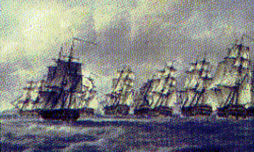

Rosc Catha na Mumhan
Battlecry of Munster (Irish)
By Piaras Mac Gearailt (Pierce McGerald c.1709-c.1792)
Sequenced by Christian Souchon


|
1. I knew it well by the chilly weather
And the fury of Thetis (***) by the shore, And by the tuneful singing of the birds That my Caesar free from gloom would return. I feel the news is welcome to Munster, And for the downtrodden race of victors. The crashing waves on the sides of vessels, Drawing baldly on a visit to us. 2. Each day 'til noon there's a light in the sun And the wan moon passes under no cloud. The tops of the tall trees are announcing, That the Gaels will not be fettered for long. I think it's for Munster like a music And the sad descendants of the mighty, The crashing waves on the sides of those ships That are speeding toward us under sail. 3. Aibell (*) may be insane and Aine (*) be young, With charming Cliona (*) they sing in unison. Thousand voices or more are joining in their song And this frenzy endows them with the strength of a lion I think it's for Munster like a music And the sad descendants of the mighty, The crashing waves on the sides of those ships That are speeding toward us under sail. 4. It's indeed a rare morning at daybreak That I won't take a run down to the sea My gaze extends, searching for the vessels Of the brave one to come slashing to us I think it's happy and sweet for Munster And the oppressed race that used to hold sway The thundering of the ships splitting the waves And swiftly toward us making their way. 5. Of the blood of Mil (**) that we have gathered in our veins, Of this rare blood, we swear it, we shall shed the last drop For our rights trampled underfoot and for all our pains That their trespasses come at last to a stop. I think it's for Munster a rare joy And for the sad descendants of the mighty The crashing waves on the sides of those ships Drawing baldly on to support us. (*) Fairy queens of the Munster Counties Clare, Limerick and Cork . (**) Mil or Milesius: mythical ancestor of the Gaels. (***) Thetis: Greek sea goddess. (Partly translated by Betty-Anne Boru 2006) |
1. D'aithníos féin gan bhréag ar fhuacht
'S ar anfa Thétis taobh le cuan Ar chanadh na n-éan go séiseach suairc Go gcasadh mo Shéasar glé gan ghruaim Measaim gur subhach don Mhumhain an fhuaim 'S dá maireann go dubhach de chrú na mbua Torann na dtonn le sleasaibh na long Ag tarraingt go teann 'n-ár gceann ar cuairt 2. Tá lasadh sa ghréin gach lae go neoin Ní taise don ré, ní théann fé neoil Tá barra na gcraobh ag déanamh sceoil Nach fada bheidh Gaeil i ngéibheann bróin Measaim gur súbhach don Mhumhain an ceol 'S dá maireann go dubhach de chrú na dtreon Torann na dtonn le sleasaibh na long Ag tarraingt go teann 'n-ár gceann fé sheol 3. Tá Aoibheall ar mire agus Áine óg agus Clíona an bhruinneal is áilne snó; táid mílte agus tuilleadh den dtáin seo fós dá sníomh le buile gur tháinig an leon. Measaim gur subhach don Mhumhain an ceol is dá maireann go dubhach de chrú na dtreon torann na dtonn le sleasaibh na long ag tarraingt go teann 'nár gceann fé sheol. 4. Is annamh dom maidin ar amharc an lae Ná bainim chum reatha go farraige síos Mo dhearca dá leathadh ag faire de shíor Ar bharcaibh an fharaire ag gearradh na slí Measaim gur súbhach don Mhumhain 's gur binn 'S dá maireann go dubhach de chrú na rí Torann na long ag scoilteadh na dtonn Ag tarraingt go teann 'n-ár gceann gan mhoill 5. Cruinníodh gach duine d'fhuil Mhíle thréin go ritheann 'na chuisle den bhfíor-fhuil braon, do milleadh le dlíthe is do crádh le claon, go mbuailfidh sé buille le báire an tséin. Measaim gur subhach don Mhumhain i gcéin is dá maireann go dubhach de chrú na dtréan torann na dtonn le sleasaibh na long ag tarraingt go teann 'nár gceann le faobhar. |
1. Le froid soudain, bien sur, en était le présage
Et la violente fureur de Thétis (***) l'annonçait, Même les oiseaux le chantaient dans leur doux ramage: Voilà que notre glorieux souverain rentrait!. De quoi mettre Munster en délire, La race des vainqueurs humiliés, Que le fracas des flots sur les flancs des navires Qui font voile vers les rivages des Irlandais. 2. Jusqu'à midi, voyez comme le soleil brille Et comme la lune s'écarte de la nuée. Le vent dans les cimes des arbres semble le dire:, Les fers des Gaëls ne tarderont plus à tomber!. Oui c'est un chant dont Munster s'enivre, La triste héritière des puissants, Que le flot qui vient battre le flanc des navires Qui approchent enfin de nos côtes à présent. 3. La folle Aïbell (*) et Aïné (*) la jeune déesse Et Cliona (*) la charmante chantent à l'unisson. Plus de mille voix reprennent ce chant de liesse. Cette frénésie lui donne la force du lion. C'est un chant dont tout Munster s'enivre Et tous les rejetons des puissants, Que les vagues qui battent le flanc des navires Qui rapides vers nos côtes font voile à présent. 4. Il n'est désormais un matin où dès l'aurore Je ne me sois en courant élancé vers la mer, Où je n'aie scruté l'horizon encore et encore, Epiant la venue de ces visiteurs si chers. Pour Munster quelle joie sans seconde, Toi la fille d'un peuple de rois, Que le fracas des nefs qui vont fendant les ondes Pour hâter l'instant où elles seront près de toi. 5. Le sang de Milésius (**) qui coule dans nos veines Jusqu'à la dernière goutte nous le verserons Pour venger nos droits bafoués et toutes les peines Que se plait à nous infliger l'occupant saxon. Pour Munster quelle joie peu commune, Des puissants le triste rejeton, Que le fracas des nefs qui sillonnent l'écume Et que nous allons bientôt voir poindre à l'horizon. (*) Reines mythiques de 3 Comtés du Munster, Clare, Limerick et Cork . (**) Mil ou Milésius: ancêtre légendaire des Gaëls. (***) Thétis: déesse grecque de la mer. (Trad. Ch.Souchon (c) 2005) |
|
Although the Stuarts had brought in the past so much disillusionment and so many disasters to Ireland, the simple, mostly Gaelic speaking, country people considered any change to be for the better especially if it would follow a Stuart return.
Their miserable existence was depicted by Jonathan Swift, in 1729, in his famous satire "A Modest Proposal" where he notes: "These mothers... are forced to employ all their time in strolling to beg sustenance for their helpless infants: who as they grow up either turn thieves for want of work, or leave their dear native country to fight for the Pretender in Spain." and he praises his "proposal" (selling the numerous Irish children as food) as able to "greatly lessen the number of papists, with whom we are yearly overrun, being the principal breeders of the nation as well as our most dangerous enemies; and who stay at home on purpose with a design to deliver the kingdom to the Pretender". The present song was written by the Irish poet Pierce McGerald (1702 - 1795) during the Seven Years War, when the welcome and tenacious rumour of the imminent coming of a French fleet with Irish Regiments (the famous "Wild Geese" ) was circulated in the Province of Munster. There was in fact a plan to that effect but the gathering fleet was destroyed by the English in the Bay of Quiberon in 1759.
The English response to this phantasmagorical song is the proud anthem
"HEARTS OF OAK ARE OUR SHIPS".
To add something to this wonderful year; To honour we call you, as freemen, not slaves, For who are so free as the sons of the waves? Heart of oak are our ships, Jolly tars are our men; We always are ready. Steady, boys, steady, We’ll fight and we’ll conquer again and again. |
Bien que les Stuart n'aient été par le passé que source de malheurs et de désillusions pour l'Irlande, les simples gens des campagnes, pour la plupart celtophones, considéraient que tout changement ne pouvait être que bénéfique, en particulier s'il était dû au retour des Stuart.
Leur existence misérable fut décrite par Jonathan Swift en 1729 (l'auteur irlandais des Voyages de Gulliver), dans une satire fameuse intitulée " Modeste Proposition" où il note/ "Ces mères... en sont réduites à errer dans les rues pour mendier de quoi nourrir leurs misérables enfants: lesquels, en grandissant, ou bien deviennent des voleurs par manque de travail, ou bien s'expatrient pour combattre pour le Prétendant en Espagne..." et il vante sa proposition comme étant de nature à "réduire considérablement le nombre de papistes qui nous submergent d'année en année, étant à la fois la principale force vive de la nation et son ennemi le plus dangereux; et qui ne quittent point le pays dans le seul but de livrer le royaume au Prétendant." Le présent chant fut composé par le poète irlandais Pierce McGerald (1702 - 1795) pendant la Guerre de Sept Ans lorsqu'une rumeur aussi tenace que bienvenue se répandit dans la Province de Munster de l'arrivée imminente d'une flotte française et de régiments irlandais (les fameuses "oies sauvages" ). Il y eut en effet un plan d'invasion de l'Irlande, mais les Anglais détruisirent la flotte en cours de rassemblement dans la baie de Quiberon en 1759.
La
réponse anglaise à ce chant peu réaliste est l'orgueilleux hymne
"C'est de coeur de chêne que sont nos vaisseaux".
Que cette année reste gravée dans les mémoires; L'honneur appelle en vous des preux, non des servants, Est-il plus libres fils que ceux de l'océan? Vaisseaux en coeur de chêne, et marins fiers et forts; Nous sommes toujours prêts. Oui, les gars, allez, Combattons et vainquons, encore et encore. |